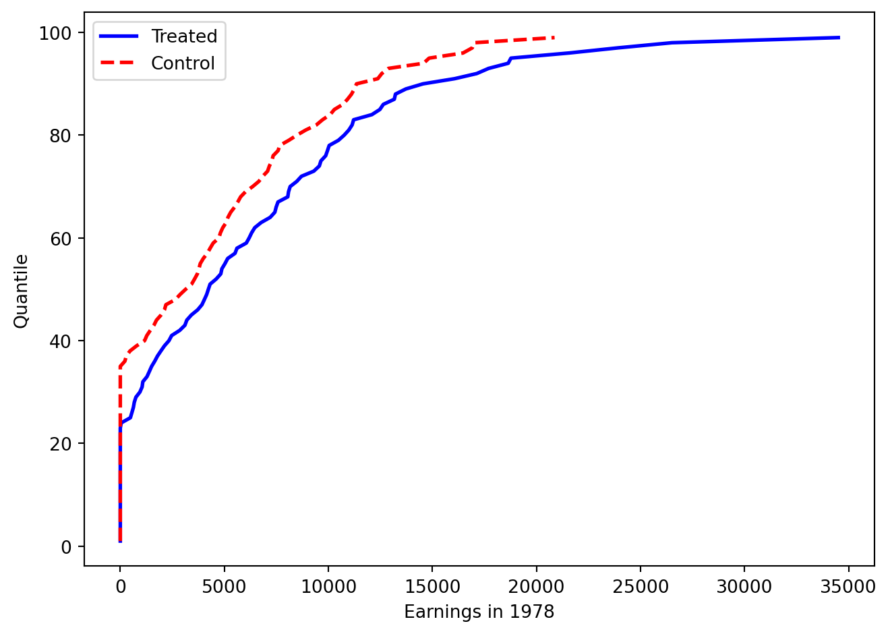
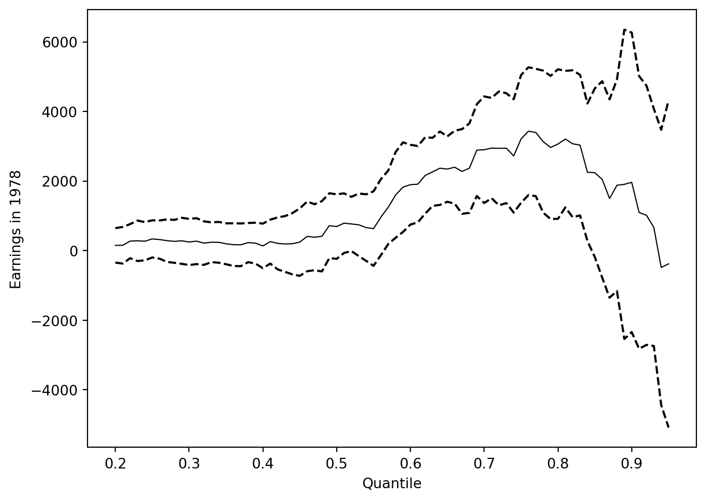
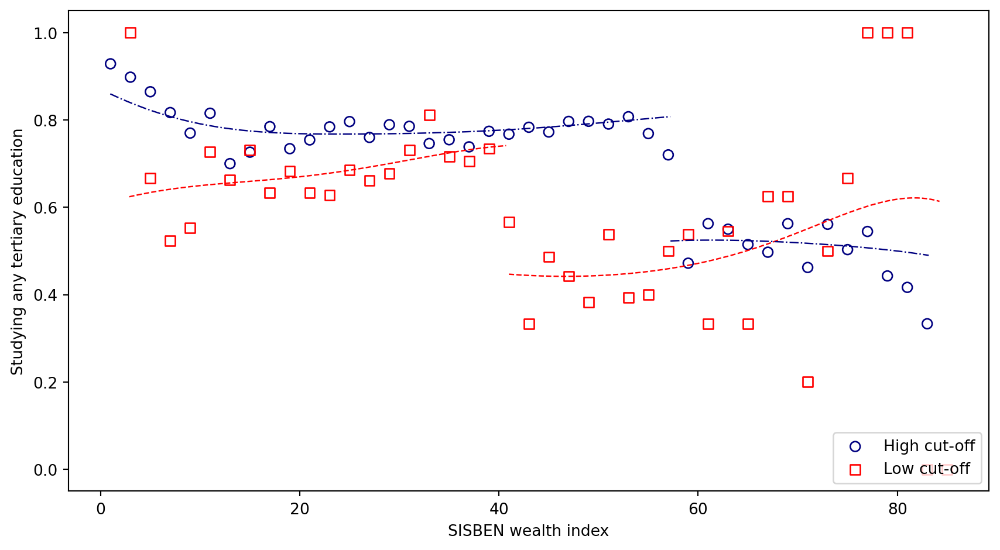
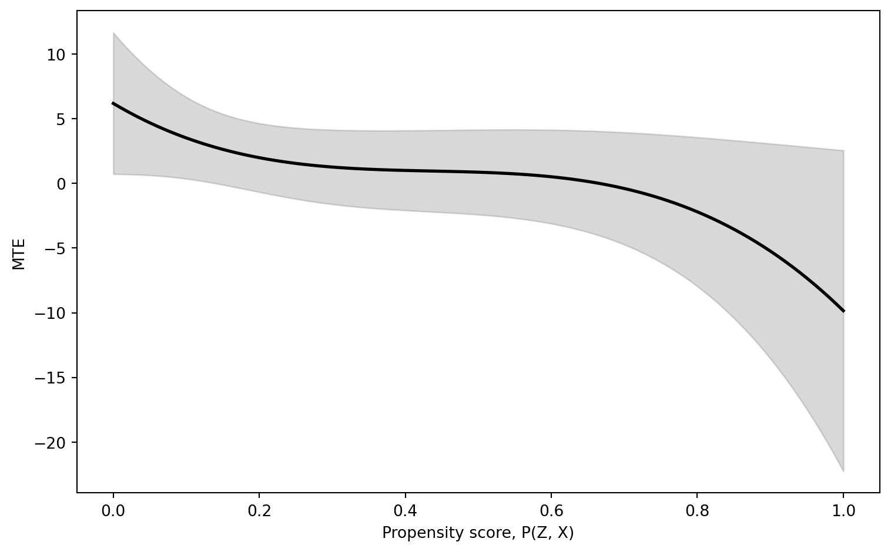

Code Call-out 8.1: Quantile Effects with an Exogenous Treatment
In this code call-out we will work with results and data discussed in Firpo (2007), which require us to return once again to the LaLonde (1986) data we have discussed at length in Chapter 3. However, here rather than focussing on average treatment effects on the treated, we will focus on a range of quantile treatment effects (QTEs) and quantile treatment effects on the treated (QTTs).
Estimating QTEs with Experimental Interventions
We will begin by exploring QTEs when treatment assignment is random, and does not require the incorporation of any controls. In these cases, at least for the estimates themselves, it is sufficient to simply directly calculate quantiles of the outcome among the treated and control units to arrive to QTEs. Let’s first load these data (along with libraries we will require below), and ensure that we know which our outcome and treatment variables are:
import numpy as npimport pandas as pdimport matplotlib.pyplot as pltimport seaborn as snsimport statsmodels.formula.api as smffrom scipy.stats import gaussian_kdefrom sklearn.linear_model import LogisticRegressiondf = pd.read_stata("data/Dehejia_Wahba_2002.dta")# Describe data structureprint(df.describe())print("Treatment counts:")print(df['treat'].value_counts())# Group meansprint("Mean re78 by treatment:")print(df.groupby('treat')['re78'].mean())# Keep Dehejia-Wahba experimental sampledf = df[df['data_id'] =="Dehejia-Wahba Sample"].copy()
Above we have kept the data corresponding to the “Dehejia-Wahba Sample” which is the original 445 treatment and control observations in the experimental implementation discussed in Dehejia and Wahba (1999). We can also exmaine the density of outcomes for both treatment and control units below:
With these experimental data, let’s calculate some QTE. In particular, let’s calculate the quantity \(\tau_{QTE(0.8)}\), which is the effect at quantile 80. We can do this simply by calculating the quantiles in each group:
Of course, we are not limited to doing this at the 80th quantile. We can examine QTEs at multiple points of the distribution, below examining quantiles 25, 50 and 75 (and comparing these to ATEs themselves):
for q in [0.25, 0.50, 0.75]: q1 = df.loc[df['treat'] ==1, 're78'].quantile(q) q0 = df.loc[df['treat'] ==0, 're78'].quantile(q)print(f"QTE at quantile {q:.2f} = {q1 - q0:.4f}")mean_treated = df.loc[df['treat']==1, 're78'].mean()mean_control = df.loc[df['treat']==0, 're78'].mean()#Compare to ATEprint(f"Mean treated = {mean_treated:.4f}")print(f"Mean control = {mean_control:.4f}")print(f"ATE = {mean_treated - mean_control:.4f}")
QTE at quantile 0.25 = 485.2298
QTE at quantile 0.50 = 1093.5135
QTE at quantile 0.75 = 2354.5790
Mean treated = 6349.1440
Mean control = 4554.8008
ATE = 1794.3433
If we inspect these QTEs and compare them to the values reported in the Supplementary Table II of Firpo (2007), we can see that they are very similar, with some marginal differences at certain quantiles likely owing to differences in manners of estimating quantiles (there are a number of ways to estimate quantiles, including different way with dealing with ties, interpolations, and so forth). We can go also further, and inspect effects across the entire distribution, which we do below at each centile:
centiles = np.arange(1, 100)FY1 = np.array([df.loc[df['treat']==1,'re78'].quantile(q/100) for q in centiles])FY0 = np.array([df.loc[df['treat']==0,'re78'].quantile(q/100) for q in centiles])diff_cdf = FY1 - FY0fig, ax = plt.subplots()ax.plot(FY1, centiles, color='blue', linewidth=2, label='Treated')ax.plot(FY0, centiles, color='red', linewidth=2, linestyle='dashed', label='Control')ax.set_xlabel('Earnings in 1978')ax.set_ylabel('Quantile')ax.legend()plt.tight_layout()plt.show()

Empirical CDFs of 1978 Earnings by Treatment Status
Typically, inference on quantile treatment effects will proceed using a bootstrap. However, we can also estimate these quantile treatment effects (along with standard errors) using quantile regression in this case with unconditional unconfoundedness. It is important to note, however, that we may see minor differences between quantile regression and quantile treatment effects as calculated “by hand” above depending on the way that percentiles are calculated. We can see this below where we estimate a simple quantile regression at the 80th percentile:
Here, while similar, this value of 2278 is marginally different to the unconditional QTE of 2273 reported above. However, there are multiple ways that quantile estimates can be calculated, in particular when data is not perfectly smooth, or where interpolations are otherwise required. One reason we will see a difference here owes to the fact that in our control group there is an even number of units and the 80th percentile falls between two units. We can confirm equivalence among regression and difference in quantiles by removing one observation so that percentiles fall precisely on a specific unit:
# Sort and drop one unit (lowest re78 = 0)df_drop = df.sort_values(['treat','re78']).iloc[1:].copy()for p in [0.25, 0.50, 0.70]: res = smf.quantreg('re78 ~ treat', df_drop).fit(q=p) q1 = df_drop.loc[df_drop['treat']==1,'re78'].quantile(p) q0 = df_drop.loc[df_drop['treat']==0,'re78'].quantile(p)print(f"\n--- Quantile {p:.2f} ---")print(f"QR coef on treat: {res.params['treat']:.4f} se: {res.bse['treat']:.4f}")print(f"Direct: treated={q1:.4f} control={q0:.4f} effect={q1-q0:.4f}")
--- Quantile 0.25 ---
QR coef on treat: 485.2298 se: 448.3997
Direct: treated=485.2298 control=0.0000 effect=485.2298
--- Quantile 0.50 ---
QR coef on treat: 1038.2991 se: 742.0767
Direct: treated=4232.3091 control=3194.0100 effect=1038.2991
--- Quantile 0.70 ---
QR coef on treat: 1795.1880 se: 904.7869
Direct: treated=8164.0695 control=6368.9097 effect=1795.1599
In this case, we see that both the QTEs as well as the means among treated and control units are equivalent to the quantile-regression based calculation.
Estimating QTEs and QTTs with non-Experimental Interventions
If, rather than believing that unconditional unconfoundedness hold, we instead believe that conditional unconfoundedness is the appropriate assumption, there are two potential ways forward. To look at this, we will use the same LaLonde (1986) data, but now with the experimental treatment sample, and the non-experimental subsample as potential control units. We will control for the same factors we have discussed in code call-outs in Chapter 3. Let’s begin by loading the requisite data, which is the observational (CPS) subsample, along with treated units, and generating a number of required covariates:
Let’s start by examining how we estimate QTEs in this observational setting. A first, simpler, case exists if we are happy to report conditional QTEs. We discuss the potential drawbacks of such QTEs in the book, but for now we can just note that if we are happy to report such conditional QTEs and invoke the required assumptions discussed in Section 8.2.2.1, we can do this very simply, by just estimating a quantile regression with covariates. We do this below (with an identical group of covariates to those used in code call out 3.1), reporting conditional quantile effects at the 25th, 50th, 75th, and 80th quantiles:
from sklearn.linear_model import QuantileRegressorX_sk = df[['treat'] + xvars].valuesy_sk = df['re78'].valuesfor tau in [0.25, 0.50, 0.75, 0.80]: qr = QuantileRegressor(quantile=tau, alpha=0, solver='highs') qr.fit(X_sk, y_sk)print(f"tau={tau:.2f}: coef={qr.coef_[0]:.4f}")
Above we have used the QuantileRegressor function from sklearn. While we could have sought to use quantreg from the statsmodels library, estimation in this case with a large number of covariates appears to be somewhat imprecise in practice. When using QuantileRegressor however we find identical results to those observed in implementations in Stata and R, with the only drawback being that standard errors are not provided by default. Below, we show how we can bootstrap our own standard errors.
The above covariate structure is slightly different to that described in the Supplementary Materials of Firpo (2007), but is useful in providing an identical comparison to previous covariate specifications. We can also examine this over the entire distribution of (conditional) quantiles. Below we loop through quantiles 20-95 (ie quantiles where we observed non-zero salaries in the experimental case). We do this as a simple loop, in each iteration saving the estimated quantile treatment effect. As we mention above, we implement our own standard errors using a bootstrap, which, in the interests of computation time, we set with relatively few bootstrap replicates (20). In practice, we would typically increase the number of replicates for more stable inference:
# Bootstrap SE functiondef bootstrap_se(X, y, tau, n_boot=20, seed=1213): rng = np.random.default_rng(seed) coefs = []for _ inrange(n_boot): idx = rng.integers(0, len(y), len(y)) qr = QuantileRegressor(quantile=tau, alpha=0, solver='highs') qr.fit(X[idx], y[idx]) coefs.append(qr.coef_[0])return np.std(coefs)#Estimate quantile regressionsqte_cond = []for q inrange(20, 96): tau = q /100 qr = QuantileRegressor(quantile=tau, alpha=0, solver='highs') qr.fit(X_sk, y_sk) se = bootstrap_se(X_sk, y_sk, tau) qte_cond.append({'quantile': tau,'qte': qr.coef_[0],'qte_se': se })qte_df = pd.DataFrame(qte_cond)
Finally, we can plot the resulting distribution of quantile treatment effects. We do this below, and note that we see a reasonable correspondence with the experimentally estimated QTEs laid out previously, however with some important differences particularly at the upper end of the distribution.
qte_df['qte_upper'] = qte_df['qte'] +1.96* qte_df['qte_se']qte_df['qte_lower'] = qte_df['qte'] -1.96* qte_df['qte_se']fig, ax = plt.subplots()ax.plot(qte_df['quantile'], qte_df['qte'], color='black', linewidth=0.8)ax.plot(qte_df['quantile'], qte_df['qte_upper'], color='black', linestyle='dashed')ax.plot(qte_df['quantile'], qte_df['qte_lower'], color='black', linestyle='dashed')ax.set_xlabel('Quantile')ax.set_ylabel('Earnings in 1978')ax.set_xticks(np.arange(0.2, 1.0, 0.1))ax.set_xticklabels([f'{x:.1f}'for x in np.arange(0.2, 1.0, 0.1)])plt.tight_layout()plt.show()

Conditional Quantile Treatment Effects
Unconditional QTEs
While the previously implemented methods allow for the calculation of conditional quantile effects, we can use these tools to calculate unconditional QTEs. Below, we implement Firpo (2007)’s reweighted estimator “by hand”. You may note that while there is a canned routine which can be used to implement these methods available in Stata (the ivqte library), no such implementation exists for Python. Nevertheless, the estimator is relatively straightforward to implement directly from the description in Firpo (2007).
The procedure works in two steps. First, we estimate a propensity score \(\hat{p}(X)\). Second, we use this propensity score to construct IPW weights which rebalance the observed outcome distributions to recover the unconditional counterfactual distributions \(F_{Y(1)}\) and \(F_{Y(0)}\). Specifically, following Firpo (2007), the weight for each observation is: \[
\hat{w}_i = \frac{D_i - \hat{p}(X_i)}{\hat{p}(X_i)(1-\hat{p}(X_i))} - \bar{w}
\] where \(\bar{w}\) is the sample mean of the uncentred weights and \(P_c = E[D_i \hat{w}_i]\) is a normalising constant. These weights are used to build reweighted empirical CDFs for the treated and control potential outcome distributions by accumulating weighted running sums over the sorted outcome values. The unconditional quantile treatment effect at quantile \(\tau\) is then obtained by inverting each reweighted CDF at \(\tau\) and taking the difference, i.e. finding the \(\tau\)th quantile of \(F_{Y(1)}\) and subtracting the \(\tau\)th quantile of \(F_{Y(0)}\). Propensity scores that are very close to 0 or 1 receive extreme weights and are trimmed prior to estimation, with the default trimming threshold of 0.001 matching the default in Stata’s ivqte. If you refer to the Stata section of this code call-out, you can see the our implementation by hand is virtually identical, while the Stata implementation also provides calculations for the standard errors and confidence intervals.
import statsmodels.api as smfrom scipy.stats import gaussian_kde as gkde# Estimate propensity score via logitX_ps = df[xvars].valuesy_ps = df['treat'].valuesps_fml_py = sm.Logit(df['treat'], sm.add_constant(df[xvars])).fit(disp=False)df['pscore'] = ps_fml_py.predict()def firpo_qte(data, tau, trim=0.001): d = data[(data['pscore'] >= trim) & (data['pscore'] <=1- trim)].copy() y = d['re78'].values ps = d['pscore'].values tr = d['treat'].values n =len(y) w = (tr - ps) / (ps * (1- ps)) w = w - w.mean() Pc = np.mean(tr * w) ord_idx = np.argsort(y) y_s = y[ord_idx] tr_s = tr[ord_idx] w_s = w[ord_idx] temp1 = np.cumsum(tr_s * w_s) / Pc / n temp0 = np.cumsum((tr_s -1) * w_s) / Pc / n ys = np.unique(y) dist1 = np.array([temp1[np.max(np.where(y_s <= yv))] for yv in ys]) dist0 = np.array([temp0[np.max(np.where(y_s <= yv))] for yv in ys]) q1 = ys[max(0, np.sum(dist1 <= tau) -1)] q0 = ys[max(0, np.sum(dist0 <= tau) -1)]return q1 - q0print("Unconditional QTEs (trim=0.001):")for tau in [0.25, 0.50, 0.75, 0.80]:print(f" tau={tau:.2f}: coef={firpo_qte(df, tau, trim=0.001):.4f}")print("\nUnconditional QTEs (trim=0):")for tau in [0.25, 0.50, 0.75, 0.80]:print(f" tau={tau:.2f}: coef={firpo_qte(df, tau, trim=0):.4f}")print("\nUnconditional QTEs (trim=0.05):")for tau in [0.25, 0.50, 0.75, 0.80]:print(f" tau={tau:.2f}: coef={firpo_qte(df, tau, trim=0.05):.4f}")
In this case, we see that the estimator performs quite poorly without trimming, suggesting that the conditional unconfoundedness assumption is likely unreasonable when considering all observations. However, when using more judicious trimming, we observe estimates which are at least broadly positive, though still quite different to those documented in the experimental sample.
Firpo (2007) documents results which are more broadly similar to those in the experimental sub-sample when using a much richer specification for the propensity score. In general, this points to the importance of appropriately modelling the propensity score, and the nature of the conditional confoundedness assumption, as discussed in general with methods based on conditional unconfoundedness in Chapter 3 of the book.
Code Call-out 8.2: Exploring Quantile Treatment Effects in a Regression Discontinuity Design
Londoño-Vélez, Rodríguez, and Fabio Sánchez (2020) study the impact of receiving financial aid for post-secondary education on rates of enrollment among low-income individuals in Colombia. Specifically, they take advantage of program eligibility rules based on cut-off scores in a wealth index to isolate effects of financial aid eligibility. These cut-off scores in the wealth index imply that for individuals whose family wealth index is below a specific explicitly designed score, they are eligible to receive financial aid provided that they meet test score requirements. However, comparable individuals with scores in the wealth index even marginally above this cut-off, are not eligible to receive financial aid.
While this suggests a standard regression discontinuity design, one novelty of these wealth cut-off scores is that they are not fixed nation-wide, but rather vary by location. For individuals living in rural areas, individuals with a score below 40.75 are eligible for financial aid, while in large metropolitan areas, this score is 57.21 (refer to Londoño-Vélez, Rodríguez, and Fabio Sánchez (2020), page 201 for full details). This suggests that we can extrapolate findings away from specific cut-offs to consider the generalisability of any treatment effect local to specific cut-off scores, following Cattaneo et al. (2021).
Confirming Discontinuities in Treatment Eligility
To see the broad context of the study, we will begin by confirming that there is a discontinuity in financial aid eligibility rates around the test score cut-off. We begin by opening the data from Londoño-Vélez, Rodríguez, and Fabio Sánchez (2020) and working with the sample they use in the paper. Specifically here, we will also impose the restriction eligible_saber11==1 which implies that all individuals in the sample meet educational criteria for financial aid, and so the only discontinuity which exists is that owing to the wealth eligibility criteria:
import pandas as pdimport numpy as npimport matplotlib.pyplot as pltfrom statsmodels.regression.linear_model import OLSimport statsmodels.api as smdata = pd.read_stata("data/LondonoVelez_et_al_2020.dta")data = data[(data['icfes_per'] ==20142) & (data['eligible_saber11'] ==1)].copy()
Now let’s visualise the discontinuity in eligibility in the entire sample. Here we will work with a re-centred running variable which for each individual defines their distance to the area-specific eligigility threshold which applied to them. In order to set up a simple visualisation we will use an arbitrary definition setting bins from 50 points below the threshold up to 50 points above the threshold, in increments of 2 points. For a discussion of optimal bins in this setting refer to the discussion in Chapter 6 of the book. Within each bin, we will generate average scores as bin, and will plot a single point for each average score. We will then overlay a linear fit on either side of the cut-off using the original data.
Above we see clear evidence of a sharp increase in eligibility when individuals fall just below the cut-off point. While no one with an above cut-off score is found to be eligible, this immediately jumps to around 60% eligibility among those with a below cut-off score. In what remains of the code call out below we will focus on the impact of falling below this cut-off, rather than the eligibility criteria itself. In effect, we wil consider a sharp design rather than a fuzzy design, though note that discussion in Cattaneo et al. (2021) points to how we could generalise this for a fuzzy design.
Visualising Multiple Treatment Cut-offs
Before we consider the process of extrapolating across cut-offs, let’s begin by confirming that we do indeed see multiple cut-offs owing to the differential treatment thresholds. We do this below, using the sisben_area variable, which takes 1 for large metropolitan areas which have a cut-off of 57.21 points, and 3 for rural areas with a cut-off of 40.75 points. There is actually also a third group (other urban areas) which takes a value of 2 and has a cut-off of 56.32 points, but because this is very close to group 1, we will only focus on rural and metropolitan areas.
We will generate two graphs, simply seeking to confirm that we see a sharp cut-off for each group at the point where, theoretically, such a cut-off should appear. We will do this with the precise score on the wealth index (sisben_score).
These graphs above are really only used to show descriptive patters, as we have built bins in average of 2 points, and so the final bin on the right hand side will be slightly contaminated with above-threshold points, but we can correct this by generating different cut-points easily enough, and the graphs above make clear that there are clear discontinuities at the points which correspond to the specific wealth cut-off which binds for each group.
Let’s now consider some outcome of interest, and the extrapolation of treatment effects which we seek to achieve. In particular, let’s work with the variable spadies_any which indicates whether an individual studies any type of post-secondary education. And let’s visualise the mean outcome and a local polynomial fit of the outcomes for each group. Below we do this in a single graph. To do so we first compute bin midpoints by taking floor(sisben_score/2)*2 + 1, which places each observation into a 2-point bin and assigns its midpoint as the representative score. We then use a single groupby on area and bin midpoint to compute the mean outcome in each bin simultaneously for both groups, before plotting these means as well as local polynomial fits on each side of each cut-off. Note that the local polynomial fits are estimated on the original microdata rather than the collapsed bin means, so that the fits are not affected by the binning.
from statsmodels.nonparametric.kernel_regression import KernelReg# Bin means: one row per bin per areadata['bin_score'] = np.floor(data['sisben_score'] /2) *2+1# midpointbins = (data.groupby(['sisben_area', 'bin_score'])['spadies_any'] .mean().reset_index() .rename(columns={'spadies_any': 'bin_mean'}))bins_hi = bins[bins['sisben_area'] =='Main metro area']bins_lo = bins[bins['sisben_area'] =='Rural area']# Local polynomial fitsdef lp_fit(df_sub, bw=10, n_grid=200): ok = df_sub[['sisben_score','spadies_any']].dropna()iflen(ok) <5:return pd.DataFrame({'x':[],'y':[]}) xs = np.linspace(ok['sisben_score'].min(), ok['sisben_score'].max(), n_grid) kr = KernelReg(endog=ok['spadies_any'].values, exog=ok['sisben_score'].values, var_type='c', reg_type='ll', bw=[bw]) ys, _ = kr.fit(xs)return pd.DataFrame({'x': xs, 'y': ys})fit_ll = lp_fit(data[(data['sisben_area']=='Rural area') & (data['running_sisben']<0)])fit_lr = lp_fit(data[(data['sisben_area']=='Rural area') & (data['running_sisben']>=0)])fit_hl = lp_fit(data[(data['sisben_area']=='Main metro area') & (data['running_sisben']<0)])fit_hr = lp_fit(data[(data['sisben_area']=='Main metro area') & (data['running_sisben']>=0)])fig, ax = plt.subplots(figsize=(9, 5))ax.scatter(bins_hi['bin_score'], bins_hi['bin_mean'], marker='o', facecolors='none', edgecolors='navy', s=40, label='High cut-off')ax.scatter(bins_lo['bin_score'], bins_lo['bin_mean'], marker='s', facecolors='none', edgecolors='red', s=40, label='Low cut-off')for fit, col, ls in [(fit_ll,'red','dashed'), (fit_lr,'red','dashed'), (fit_hl,'navy','dashdot'), (fit_hr,'navy','dashdot')]:iflen(fit): ax.plot(fit['x'], fit['y'], color=col, linestyle=ls, linewidth=0.9)ax.set_xlabel('SISBEN wealth index')ax.set_ylabel('Studying any tertiary education')ax.legend(loc='lower right')ax.yaxis.set_major_formatter(plt.FuncFormatter(lambda x, _: f'{x:.1f}'))plt.tight_layout()plt.show()

In the above plot we can quite easily see the idea of what we wish to do when extrapolating treatment effects away from the cut-off. Specifically, we wish to consider the first cut-off, here at 40.75 points. We wish to calculate the treatment effect at this cut-off by comparing outcomes among exposed units just at the left to those just at the right in the spirit of an RDD. And then we wish to consider what the treatment effect would look like at specific points above 40.75 if we use the trend among units exposed at a higher cut-off point (those with blue circles) to extrapolate means in the below-cut-off group with red squares, before finally comparing extrapolated means with actual observed rates among those with red squares to the right of the treatment cut-off.
Extrapolating Treatment Effects Away from the Cut-off
In order to do such an extrapolation, we require a way to estimate local polynomial fits at various points (including at end-points just before treatment cut-offs), as well as the variance of these local polynomial estimates. Fortunately, in relation to the work of Cattaneo et al. (2021), the authors developed software for such local polynomial fits, incorporating elements such as robust bias correction. This is available (currently in Stata and R) as nprobust and we will work with this package below to estimate the required quantities. Given that there is not yet a native Python implementation, we port the R implementation, which assumes that you have R installed on your machine (along with nprobust in R and the Rpy2 library in Python).
Let’s begin by imagining that we wish to extrapolate treatment effects from the true cut-off of 40.75 up a higher point on the SISBEN wealth index (50 points). To do so, we need four quantities. Firstly, we need to calculate the end point of the low-cut-off group precisely at 40.75 points (ie the point just before the discontinuity kicks in). Cattaneo et al. (2021) call this first quantity \(\mu_{0,\ell}(\ell)\) Secondly, we need to calculate the mean values in the high-cut-off group at both 40.75 and 50 points, which allows us to calcualte any trend over this range. Cattaneo et al. (2021) refer to these as \(\mu_{0,h}(\ell)\) and \(\mu_{0,h}(\bar{x})\) respectively. And finally, we wish to calculate the mean among low-cut-off group outcomes at 50 points, which Cattaneo et al. (2021) refer to as \(\mu_{1,\ell}(\bar{x})\). Once we have these points in hand, as discussed in Section 8.4.2.2 of the book, we can simply extrapolate our treatment effect as: \[
\widehat\tau_\ell(\bar{x})=\widehat\mu_{1,\ell}(\bar{x}) -[\widehat\mu_{0,h}(\bar{x})+\widehat\mu_{0,\ell}(\ell)-\widehat\mu_{0,h}(\ell)].
\]
Let’s do this below, using `lprobust’ to generate key quantities. We will also take the variance at each point, allowing us to calculate the standard error of the extrapolated treatment effect as the square root of the total variance. Note that because we are jointly estimating \(\mu_{0,h}(\ell)\) and \(\mu_{0,h}(\bar{x})\) and then wish to calculate the variance of \(\mu_{0,h}(\bar{x})-\mu_{0,h}(\ell)\), this is \(Var(\mu_{0,h}(\bar{x})-\mu_{0,h}(\ell))=Var(\mu_{0,h}(\bar{x})+Var(\mu_{0,h}(\ell))-2\times Cov(\mu_{0,h}(\bar{x}),\mu_{0,h}(\ell))\); see for example the calculation in the authors’ original materials here.
# Reload full data to ensure lprobust has the complete unfiltered sampledata = pd.read_stata("data/LondonoVelez_et_al_2020.dta")data = data[(data['icfes_per'] ==20142) & (data['eligible_saber11'] ==1)].copy()import rpy2.robjects as roro.r('library(nprobust)')def lprobust_py(y, x, eval_pts, covgrid=False, bwselect='mse-dpi'): ro.globalenv['lp_y'] = ro.FloatVector(y.astype(float).tolist()) ro.globalenv['lp_x'] = ro.FloatVector(x.astype(float).tolist()) ro.globalenv['lp_eval'] = ro.FloatVector([float(e) for e in eval_pts])if covgrid: ro.globalenv['lp_bwselect'] = ro.StrVector([bwselect]) res = ro.r('lprobust(y=lp_y, x=lp_x, eval=lp_eval, covgrid=TRUE, bwselect=lp_bwselect)')else: res = ro.r('lprobust(y=lp_y, x=lp_x, eval=lp_eval)') est = np.array(res.rx2('Estimate')) cov_rb = np.array(res.rx2('cov.rb')) if covgrid elseNonereturn est, cov_rbmask_ll = (data['sisben_area'] =='Rural area') & (data['sisben_score'] <40.75)mask_lr = (data['sisben_area'] =='Rural area') & (data['sisben_score'] >=40.75)mask_h = (data['sisben_area'] =='Main metro area') & (data['sisben_score'] <57.21)est0, _ = lprobust_py(data.loc[mask_ll,'spadies_any'].values, data.loc[mask_ll,'sisben_score'].values, [40.75])mu_0_l_l = est0[0,4]; v_0_l_l = est0[0,7]**2est1, _ = lprobust_py(data.loc[mask_lr,'spadies_any'].values, data.loc[mask_lr,'sisben_score'].values, [50.0])mu_1_l_x = est1[0,4]; v_1_l_x = est1[0,7]**2est2, cov_rb = lprobust_py(data.loc[mask_h,'spadies_any'].values, data.loc[mask_h,'sisben_score'].values, [40.75, 50.0], covgrid=True)mu_0_h_l = est2[0,4]; v_0_h_l = est2[0,7]**2mu_0_h_x = est2[1,4]; v_0_h_x = est2[1,7]**2cov_rho = cov_rb[1,0]effect = mu_1_l_x - (mu_0_h_x + mu_0_l_l - mu_0_h_l)variance = v_0_l_l + v_1_l_x + v_0_h_l + v_0_h_x -2* cov_rhoprint(f"Effect at 50 is: {effect:.6f}")print(f"Variance at 50 is: {variance:.6f}")
Effect at 50 is: -0.261200
Variance at 50 is: 0.012310
While this is a single extrapolation, we can of course extrapolate more widely up to any point below the second cut-off, at which point no untreated units remain. Below we conduct a similar process now extrapolating across a range of values. This simply replicates the code above, but incorporating a loop for various values \(\bar{x}\) used to extrapolate.
Figure 1: Non-parametric fits with multiple cut-offs
We can see what the extrapolated effects look like across a range of values, presenting these estimates along with 95% confidence intervals. In this specific case we note that extrapolated effects are quite flat, which makes sense given that both relevant non-parametric fits (shown in ?@fig-npmulticutPython) in the relevant range between 40 and 57 are quite flat.
Code Call-out 8.3: Marginal Treatment Effects
In this code call-out we consider a number of elements related to the estimation of marginal treatment effects (MTEs). To do so, we work with data from Carneiro, Lokshin, and Umapathi (2017), who estimate the returns to upper secondary schooling in Indonesia and examine how those returns vary across individuals with different likelihoods of enrolling. This setting is well-suited to consider the MTE framework. If individuals sort into schooling partly based on their own anticipated returns, then the returns among those who enrol only when schooling is made more accessible (the compliers of any given instrument) may differ substantially from returns among those who would always enrol regardless. The MTE surface we consider here traces out exactly this variation.
Following Carneiro, Lokshin, and Umapathi (2017), data from the 2000 wave of the Indonesia Family Life Survey (IFLS) is used, restricted to men aged 25-60 who are employed and report non-missing wages and schooling, along with non-missing information on an instrument, key covariates used for calculating a propensity score. This yields a sample of 2,608 working-age males. We load these data below and subset to observations with non missing observations, examining summary statistics for log earnings, the key outcome in the estimation sample.
import pandas as pdimport numpy as npimport osimport statsmodels.api as smdata = pd.read_stata("data/Carneiro_et_al_2017.dta")X = ["age", "age2","r_protest", "r_cathol", "r_other","elem_f", "jsec_f", "edumiss_f","elem_m", "jsec_m", "edumiss_m","rural", "kmsd","prov_NSUM", "prov_WSUM", "prov_SSUM", "prov_LAMP","prov_JAKA", "prov_CJAV", "prov_YOGI", "prov_EJAV","prov_BALI", "prov_WNUSA", "prov_SKALI", "prov_SSUL"]INT_vars = [v for v in data.columns if v.startswith("INT_")]vars_all = ["learnhr00", "dschool", "kmsmp"] + X + INT_varsdata["touse"] = data[vars_all].notna().all(axis=1).astype(int)data_sample = data.loc[data["touse"] ==1].copy()data_sample['learnhr00'].describe()
count 2608.000000
mean 7.779145
std 0.932049
min 3.775564
25% 7.195619
50% 7.721826
75% 8.346067
max 12.623435
Name: learnhr00, dtype: float64
In this context, our “treatment” variable of interest is the binary measure of whether an individual attended upper secondary school (dschool). The authors also propose an instrument (kmsmp), which is a measure of the distance from each individual’s community head’s office to the nearest secondary school. In this call out we do not discuss the assumptions related to this IV, but rather follow the authors in using this, given the importance of instruments in this setting to trace out the MTE over a meaningful range of the propensity score.
Propensity Score Estimation and Common Support
Given the central nature of the propensity score in the MTE framework, we begin with its estimation. We estimate the propensity score using a logit model where the binary treatment indicator dschool is regressed on the full set of covariates (which will be included in models below), along with the instrument. Specifically, the specification includes the distance to the nearest secondary school (kmsmp), all interaction terms of covariates with the instrument (INT_*), and the baseline set of individual and household characteristics contained in the vector X defined above (age and age squared, parental education indicators, religious affiliation, rural status, distance to the closest health post, and province fixed effects). Below we estimate the logit, and then generate each indiviudal’s predicted probability of schooling, ie the propensity score.
Given that MTEs can only be identified over the support of the propensity score, hereafter \(P\), it is important to understand its distribution, and in particular the overlap across individuals who did and did not attend upper secondary school.
To further assess the support conditions, it is useful to examine not only the overall distribution of the propensity score, but also how this distribution varies over the support of all covariates \(X\). This relates to a point raised by Carneiro, Heckman, and Vytlacil (2011) whote note:
“If all we are willing to assume is that (\(U_0\), \(U_1\),V) is independent of \(Z\) given \(X\), then it is only possible to estimate the MTE over the support of \(P\) conditional on \(X\).” (Carneiro, Heckman, and Vytlacil (2011), p. 2768)
To consider the relevance of this, we can follow Carneiro, Heckman, and Vytlacil (2011) in plotting the marginal distribution of \(P|X\). However, given that \(X\) is multidimensional, this is considered over an index \(X(\delta_1 - \delta_0)\). To do this, we estimate separate outcome equations for individuals with and without upper secondary schooling, obtain the coefficient vectors \(\hat{\delta}_1\) and \(\hat{\delta}_0\), and take their difference. Multiplying this difference by each individual’s covariates yields the index \(X(\hat{\delta}_1 - \hat{\delta}_0)\), which summarizes the observable component of the return to schooling. We generate this index below:
With this index, we estimate a conditional density \(f(P \mid X)\), which is the density of the propensity score \(P\) at each point of the index. We do this nonparametrically using a bivariate kernel density estimator gaussian_kde to estimate a joint density \(f(X|P)\). The resulting density values are then normalised within each value of \(X\) (each row of the resulting matrix) so that they sum to one, giving an estimate of \(f(P \mid X = x)\) for each bin’s representative value of \(x\). In essence, this simply builds densities locally within small sections of the data. This yields a dataset of triplets \((x, P, \hat{f}(P \mid x))\) across the joint support of \(X\) and \(P\), which can be visualised as a surface showing how the distribution of the propensity scores shifts as the covariate index changes.
Once we have this triplet of points of the X grid, the propensity score, and the density, we can plot these in a 3-d surface. We do this below using the plotly library, allowing us to observe the density interactively.
import plotly.graph_objects as gofig = go.Figure( data=[ go.Surface( x=x_grid, y=p_grid, z=z_cond.T ) ])fig.update_layout( title="Support of P conditional on X index", scene=dict( xaxis_title="X(δ1 - δ0) index", yaxis_title="P (propensity score)", zaxis_title="f(P | X)" ))
Inspecting the resulting surface, we can see that while there is a positive density at many points of support of the observable index \(X\), there are also areas with essentially no covarage, namely areas with quite high values of the index and high propensity scores. Given this lack of full support over all values of \(X\), typically assumptions are invoked such that all we require is common support of the propensity score across treatment and untreated units. Assumptions such as additive separability allow for this, which implies assuming \(E(U_D|V,X)=E(U_D|V)\), or that the slope of the MTE is independent of \(X\).
If invoking this assumption, all we need to consider is the common support of \(P\) across treatment regimes. In Figure ?@fig-supportR we observe quite broad common support, however below we generate a variable which indicates whether observations are in the region of common support considering maximum and minimum propensity scores in each group. We will limit our analysis by removing the relatively small subset of observations (around 1%) for which there is no overlap.
There are multiple ways in which we can implement MTEs, and at times these can be quite computationally challenging. A simple and very illustrative way to estimate MTEs is through a parametric approach. In essence, all this requires is for us to model \(E[Y \mid P]\) as a flexible polynomial or spline (in terms of \(P\)), along with all relevant covariates. Then MTE is then the derivative of \(E[Y \mid P]\) with respect to \(P\) across all points of support of the propensity score. Consider the below “manual” implementation of such a parametric approach. Here we include the propensity score in a linear way along with 3 higher polynomial terms. We also include all controls both in levels, as well as interacted with the propensity score. This latter term allows us to consider whether returns to individual characteristics themselves depend on the likelihood of being treated.
# Interactions of covariates with propensity scorefor v in X: data_sample[f'PX_{v}'] = data_sample['ps_manual'] * data_sample[v]PX_vars = [f'PX_{v}'for v in X]# Quartic polynomial plus covariate interactionsall_vars = (X + PX_vars + ['ps_manual'] + [f'ps_manual_{i}'for i inrange(2, 5)])data_sample['ps_manual_2'] = data_sample['ps_manual']**2data_sample['ps_manual_3'] = data_sample['ps_manual']**3data_sample['ps_manual_4'] = data_sample['ps_manual']**4rhs_vars = (X + PX_vars + ['ps_manual','ps_manual_2','ps_manual_3','ps_manual_4'])Xmat = sm.add_constant(data_sample[rhs_vars].astype(float))Y_ps = sm.OLS(data_sample['learnhr00'].astype(float), Xmat).fit(cov_type='HC1')print(Y_ps.summary())
Once we have this parametric implementation, we simply can calculate a marginal treatment effect by exploring how our outcome \(E[Y|X]\) varies with the propensity score—or the resistance to treatment. This quantity is the marginal treatment effect, defined as in (8.42) of the book. Fortunately this is relatively easily calculated at a range of propensity scores using Stata’s margins command. We do this below, calculating the marginal effect of a change in the propensity score, saving the resulting effects, and their default standard errors. Finally, we can plot these marginal treatment effects as they vary with \(P(Z)\).
# Analytic derivative: dE[Y|P,X]/dP evaluated on a grid# averaged over observed X valuesb = Y_ps.params# PX terms that are not NaN (some may be dropped due to collinearity)PX_in_model = [v for v in PX_vars if v in b.index andnot np.isnan(b[v])]X_in_model = [v.replace('PX_','') for v in PX_in_model]# Average PX contribution over observed X (constant across ps grid)X_mat = data_sample[X_in_model].astype(float).valuespx_contrib = np.mean(X_mat @ np.array([b[v] for v in PX_in_model]))ps_grid = np.linspace(0, 1, 101)mte_vals = (b['ps_manual']+2* b['ps_manual_2'] * ps_grid+3* b['ps_manual_3'] * ps_grid**2+4* b['ps_manual_4'] * ps_grid**3+ px_contrib)# Delta-method SE for polynomial terms onlydmte = np.column_stack([ np.ones_like(ps_grid),2* ps_grid,3* ps_grid**2,4* ps_grid**3])poly_idx = ['ps_manual','ps_manual_2','ps_manual_3','ps_manual_4']cov_sub = Y_ps.cov_params().loc[poly_idx, poly_idx].valuesse_mte = np.sqrt(np.diag(dmte @ cov_sub @ dmte.T))lo = mte_vals -1.645* se_mtehi = mte_vals +1.645* se_mtefig, ax = plt.subplots(figsize=(8, 5))ax.fill_between(ps_grid, lo, hi, alpha=0.3, color='grey')ax.plot(ps_grid, mte_vals, color='black', linewidth=2)ax.set_xlabel('Propensity score, P(Z, X)')ax.set_ylabel('MTE')plt.tight_layout()plt.show()

Figure 3: Marginal Treatment Effects Under a Polynomial Specification
?@fig-MTEparametricPython plots the MTE as a function of the propensity score. The MTE measures the marginal return to upper secondary schooling for individuals with a given probability of enrolling. The figure reveals individuals with a higher propensity to attend upper secondary school tend to experience higher marginal returns, while individuals with a lower propensity exhibit lower returns. While our approach here is quite manual it allows us to see the ideas behind parametric approaches to MTE estimation. Fully-fledged implementations of this which exist as formal routines in other language (namely Stata’s mtefe approach we discuss in the Stata section of this code call-out), produce very similar point estimates.
Semi-parametric (Local IV) methods
Policy Relevant Treatment Effects
As discussed in the Book, given the availability of estimated marginal treatment effects, we can use these as building blocks to estimate a large number of quantities of interest. To see a rough idea of this we can consider what our ATEs, ATTs, ATUs as well as a PRTE under a specific alternative policy might look like. We will do this manually to have an idea of the mechanics, though note that more formal ways about how to do this with weighting are used in practice; see Andresen (2018) for a computational discussion. To gain a rough idea of how we can use these MTEs to calculate marginal PRTEs, we essentially can consider the effect of policies which shift certain individuals into treatment. To build intuition for this, consider two stylised policies applied to currently untreated individuals. The first targets those with low propensity scores (\(P \in [0.05, 0.20]\)); i.e. individuals who are relatively willing to enrol (low propensity score, or low aversion to treatment) but currently not enrolled. These are the “easy shifters”: a modest policy change would be enough to tip them into treatment. The second targets individuals with high propensity scores among the untreated (\(P \in [0.55, 0.70]\)) these are “harder shifters”, or more resistant individuals who would only enrol under a strong intervention.
Based on the MTEs we have estimated above, we can consider what this would imply for the individuals in this setting. To illustrate this, we will use the MTEs we have previously calculated based on the parametric approach. If you refer above, you will remember that we generated a file called mte_grid with the marginal treatment effect for each binned propensity score from 0 to 1 in increments of 0.01. Below, we will merge these marginal treatment effects back into the original estimated propensity scores, allowing us to observe, for each individual (and hence propensity score), our estimate of their MTE. Of course, this will be a simple approximation as we are using a coarse grid of propensity scores.
Low resistance MTE:
count 461.000000
mean 2.972742
std 0.633703
min 1.985526
25% 2.343909
50% 2.950006
75% 3.512652
max 4.178117
Name: _margin, dtype: float64
High resistance MTE:
count 137.000000
mean 0.325127
std 0.339891
min -0.396289
25% 0.055067
50% 0.451078
75% 0.615284
max 0.735642
Name: _margin, dtype: float64
We can see that in these two cases, the mean treatment effect is very different, with very high positive returns in the first case, and negative returns in the latter case. The contrast between these two quantities illustrates on of the central message of the MTE framework: the return to a policy depends not just on whether it shifts people into treatment, but on who it shifts. Given positive selection on gains such as those estimated here, policies reaching more willing individuals, i.e. those with low resistance, yield higher average returns than those requiring a more intensive intervention.
However, less abstractly, we can consider specific policy interventions, and how they would map into treatment effects. The idea of a PRTE is to consider an alternative policy \(P(Z')\). In this case, imagine an alternative policy in which distances to schools (the instrument considered above) are reduced, presumably via some sort of school construction program. Using the ideas of PRTEs, we can ask what such a movement in terms of the instrument implies, and for which individuals will such a movement be sufficient to shift them into treatment. Concretely, imagine a policy which reduced distance to secondary schooling for each individual by 0.1km. Because the instrument enters the propensity score via the estimated logit, we can translate this distance reduction directly into a counterfactual propensity score \(P'(Z)\) for each individual, and identify those untreated individuals whose counterfactual propensity score exceeds their original one. These are the compliers of the policy, and the PRTE is their average MTE. We do this below, re-estimating our original logit and “mapping” our new policy into a \(P(Z')\).
# Re-estimate logit (same spec as above)logit_ps2 = sm.Logit( data_mte['dschool'], sm.add_constant(data_mte[model_vars].astype(float))).fit(disp=False)# Predict original linear indexdata_mte['xb_orig_idx'] = logit_ps2.predict( sm.add_constant(data_mte[model_vars].astype(float)), which='linear')# Counterfactual: move everyone 0.1km closer, floor at zerodata_mte['kmsmp_policy'] = np.maximum(data_mte['kmsmp'] -0.1, 0)# Swap out kmsmp contribution only (INT_* left unchanged, as in Stata)kmsmp_coef = logit_ps2.params['kmsmp']data_mte['xb_policy_idx'] = (data_mte['xb_orig_idx']- kmsmp_coef * data_mte['kmsmp']+ kmsmp_coef * data_mte['kmsmp_policy'])# Counterfactual propensity scoredata_mte['ps_policy'] =1/ (1+ np.exp(-data_mte['xb_policy_idx']))# Verify direction: ps_policy should be >= ps_manual for everyone# since reducing distance increases probability of schoolingprint(data_mte[['ps_manual', 'ps_policy', 'kmsmp']].head(10))print(f"kmsmp coefficient: {kmsmp_coef:.6f}")# Identify shifted individualsdata_mte['shifted'] = ( (data_mte['dschool'] ==0) & (data_mte['ps_policy'] > data_mte['ps_manual'])).astype(int)print(data_mte['shifted'].value_counts())print("PRTE:")print(data_mte.loc[data_mte['shifted'] ==1, '_margin'].describe())
The PRTE for the distance instrument identifies the return to schooling for individuals who would change their enrolment decision in response to a modest reduction in distance to their nearest secondary school. Despite the small size of the policy shift, the strong relationship between distance and enrolment in this setting means that a substantial number of currently untreated individuals are moved into treatment, and these compliers exhibit large and positive marginal returns. This suggests that the policy is reaching individuals who, while not currently enrolled, sit in a region of relatively low resistance and high returns, closer to our “low resistance” individuals considered previously than the higher resistence group.
References
Andresen, Martin Eckhoff. 2018. “Exploring Marginal Treatment Effects: Flexible Estimation Using Stata.”The Stata Journal 18 (1): 118–58.
Carneiro, Pedro, James J. Heckman, and Edward J. Vytlacil. 2011. “Estimating Marginal Returns to Education.”American Economic Review 101 (6): 2754–81. https://doi.org/10.1257/aer.101.6.2754.
Carneiro, Pedro, Michael Lokshin, and Nithin Umapathi. 2017. “Average and Marginal Returns to Upper Secondary Schooling in Indonesia.”Journal of Applied Econometrics 32 (1): 16–36. https://doi.org/https://doi.org/10.1002/jae.2523.
Cattaneo, Matias D., Luke Keele, Rocío Titiunik, and Gonzalo Vazquez-Bare. 2021. “Extrapolating Treatment Effects in Multi-Cutoff Regression Discontinuity Designs.”Journal of the American Statistical Association 116 (536): 1941–52.
Dehejia, Rajeev H., and Sadek Wahba. 1999. “Causal Effects in Nonexperimental Studies: Reevaluating the Evaluation of Training Programs.”Journal of the American Statistical Association 94 (448): 1053–62. http://www.jstor.org/stable/2669919.
LaLonde, Robert J. 1986. “Evaluating the Econometric Evaluations of Training Programs with Experimental Data.”The American Economic Review 76 (4): 604–20.
Londoño-Vélez, Juliana, Catherine Rodríguez, and and Fabio Sánchez. 2020. “Upstream and Downstream Impacts of College Merit-Based Financial Aid for Low-Income Students: Ser Pilo Paga in Colombia.”American Economic Journal: Economic Policy 12 (2): 193–227.